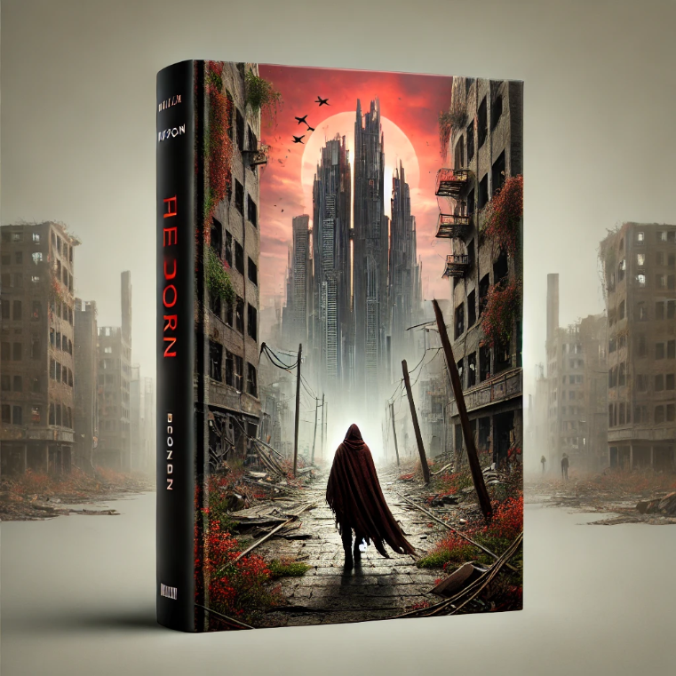

Описание:
📙 «Последний Город» (Антиутопия)
После множества войн и катастроф человечество почти исчезло, а разрушенные земли стали бесплодными пустошами. Единственный сохранившийся город окружён неприступными стенами, а его жители живут по жестоким законам выживания. Бродяга Райан, уставший от скитаний, находит в заброшенном архиве зашифрованное послание, которое может изменить всё. Кто оставил это сообщение? И какие тайны скрывает последний город на Земле?